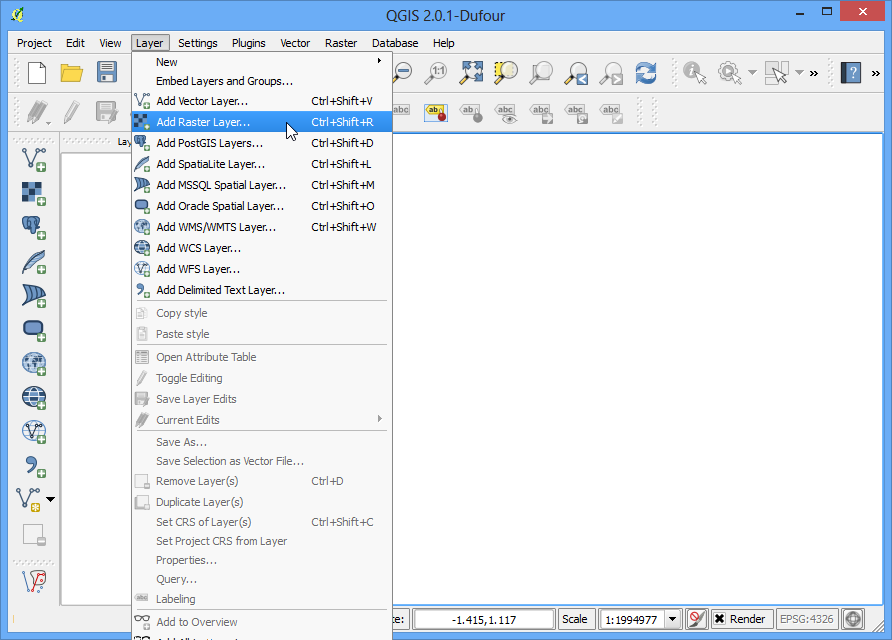
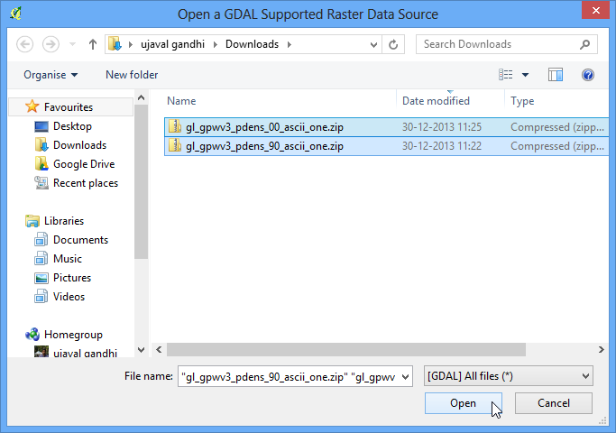
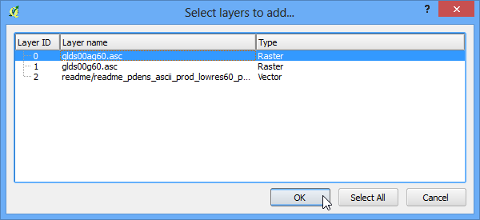
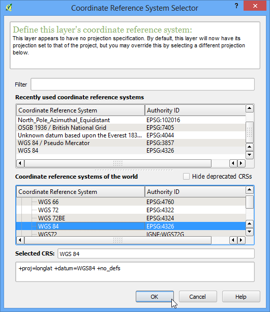
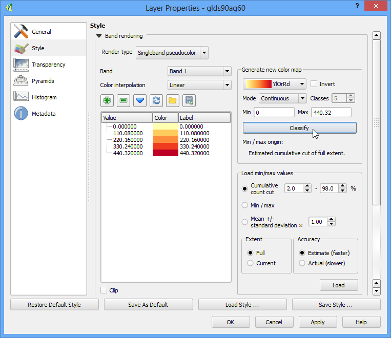
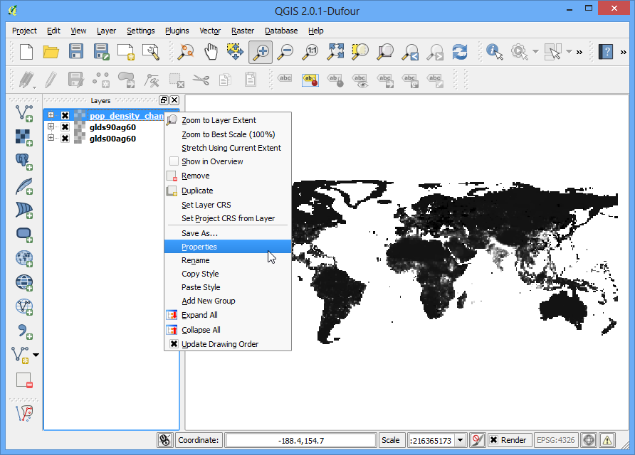
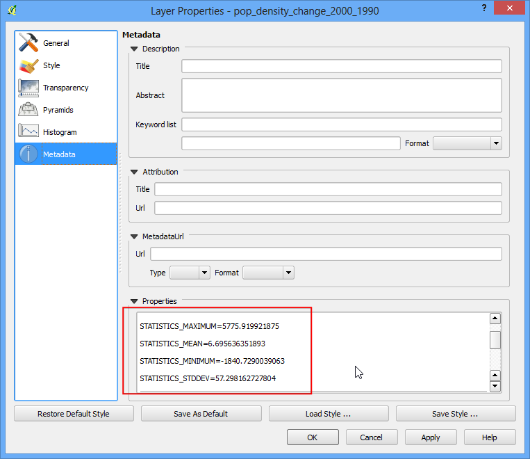
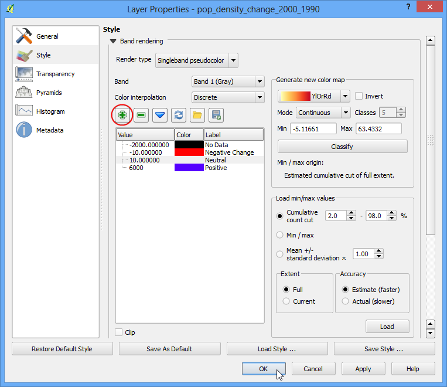
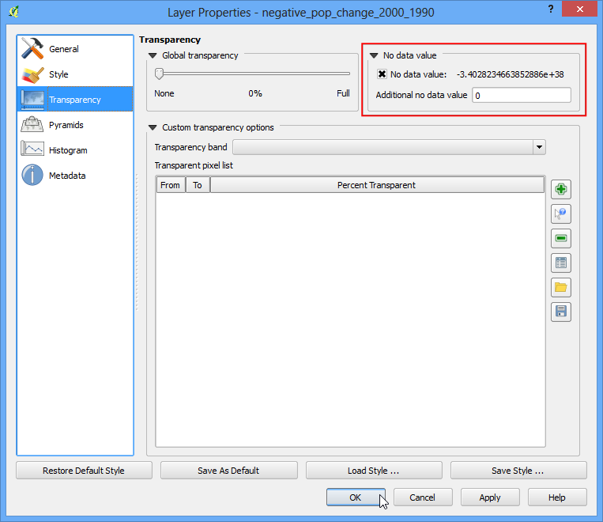

網格式影像的基本分析與樣式設定
許多的科學觀測與研究產生的是網格式影像（Raster）資料。這種資料以點陣圖的方式呈現，點陣中的每個像素都有自己的特定數值。只要使用一些數學運算，就可以拿這些數值進行有趣的分析。QGIS 中的 影像計算 功能具有許多基本的指令可供使用，在本教學中，會展示基本的 影像計算 功能操作，以及一些設定網格式影像樣式的選項。
內容說明
我們要使用人口密度的網格資料，呈現 1990 到 2000 年間，人口密度具有大幅度改變的地方。
操作流程
打開 QGIS，選擇 。

移到下載檔案的資料夾，按住 Ctrl 鍵後點選兩個 zip 檔，這樣就可以一次讀取它們。（譯註：如果出現錯誤訊息的話，先解壓縮到同一個資料夾中，然後再參考下一步，選擇目標檔案即可。）

每個 zip 檔都有 2 個網格檔。有 a 的那個檔表示人口數量有經過調整以符合聯合國的統計數值。本教學使用調整過後的資料。選擇 glds00ag60.asc 圖層，然後按下 確定。

這個圖層並沒有定義 CRS，因此我們得手動選擇 EPSG:4326 作為這個以經緯度為單位的圖層之座標參考系統。

由於我們選擇了兩個 zip 檔，因此同樣的步驟要做兩次。重複以上步驟，這次選擇 glds90ag60.asc 加到專案中。
再一次選 EPSG:4326 作為 CRS。

現在兩個圖層都讀到 QGIS 內了。網格式影像會使用灰階來呈現，顏色越深表示像素值越低，而顏色越淺表示像素值越高。

影像中的每個像素都有自身值，在這兩個檔案中，這個值就是人口密度。選擇 識別圖徵 後在影像的任一處點一下，就可以看到這個像素的人口密度值。

為了適當的呈現人口密度分佈的圖樣，得調整一下樣式才行。在圖層名字上按右鍵選擇 屬性，或是直接在圖層名字上按兩下，都可以進到圖層屬性的視窗。

在 樣式 分頁下，把 繪圖類型 換成 單波段偽彩色，然後按下位於 產生新的色彩對映表 中的 分類 鈕。會有 5 個新顏色和值跑出來，最後按下 確定。

回到 QGIS 主畫面，就可以看到影像使用類似溫度分佈圖的概念著色。順便也對另一個影像執行相同步驟。

我們的分析目標是找出在 1990 年到 2000 年間有劇烈的人口變動的地方，方法則是計算這兩個影像的每個像素數值的差異。選擇 ，

在 影像波段 的選擇框中，可以點兩下以選擇某個圖層。這裡的波段命名方式是圖層名稱加上「@」再加上波段編號，由於我們的影像都只有 1 個波段，所有每個影像都只會有「編號 1」。在影像計算的功能中，可以針對像素進行基本的數學運算，為了找出人口密度差異，必須要在 2000 年的資料中減掉 1990 年的資料，所以計算式要輸入 glds00ag60@1 - glds90ag60@1。把輸出檔命名為 pop_density_change_2000_1990.tif，勾選 將結果加入專案 ，最後按 確定。

操作完成後，新圖層會被加入到 QGIS 中。

雖然灰階看起來還不錯，但我們還是可以改一個更能表達資訊的樣式。在 pop_density_change_2000_1990 圖層上按右鍵後進入 屬性，

這次我們要把在同一個範圍之內的像素值設成相同顏色。在設定之前，先到 詮釋資料 分頁內看一下這個影像的屬性，尤其是最大值和最小值。

切到 樣式 分頁下，把 繪圖類型 換成 單波段偽彩色，再把 色彩內插 調成 離散。之後按下 手動新增值 4 次以建立 4 個類別，點一下類別的數值就可以進行更改。在這裡，色彩對應的規則是「像素值比這個類別的值低的所有像素，都會被設成這個類別的顏色」。因為我們的影像的像素最小值比 -2000 還高一點，所以我們把第一個類別的值設成 -2000，這樣這個顏色代表的就是「沒有資料值」（No Data Values）。照如下的方式把所有類別都設定完成，然後按下 確定。

現在人口變多或變少的地方就清楚的顯示出來了。接下來按下 放大 鈕在歐洲附近拉一個矩形，縮進去看看細節。

選擇 識別圖徵 後在影像紅色含藍色處點看看，就可以確認剛剛的樣式設定是沒問題的。

最後再讓我們多做一步，把人口密度呈現負增長的地方篩選出來。開啟 ，

輸入如下所示的表示式，如果像素值符合表示式，輸出的像素值就是 1 ，如果不符合，就會是 0。這樣我們就可以得到新的影像檔，像素值為 1 時表示負增長，值為 0 時則沒有負增長。把輸出檔命名為 negative_pop_change_2000_1990，勾選 將結果加入專案 ，最後按 確定。
pop_density_change_2000_1990@1 < -10

新圖層產生後，以右鍵進入 屬性 ，在 透明度 分頁中的 附加無資料值 的地方打上 0 ，這樣的話值為 0 的像素也會被設成透明。最後按下 確定。

最後，就只剩下所有的負人口增長區是灰黑色的了。